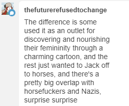

from what ive seen former bronies either become lgbt and cool people to be around or evil unadulterated fascists absolutely no inbetween

that makes a lot of sense actually
i feel like in the beginning it was “haha this is a weird thing to enjoy but we anticipate shocked reactions and we respond to them with Love and Tolerance just like in the cartoon haha :)” and then those people left & ascended the gay ladder and the remaining fandom became “you dont get my weird interests because youre a Normie and i dont have to care what you say, i make dirty mature content with kids cartoons cuz Fuck You >:)”
Because grown adult men enjoying something that is blatantly not masculine is such a terrible horrifying thing that they MUST either already not fit with society expectations or be horrible people.
Because gender roles are absolutely inviolable.
And nor because say… it’s a great animated series, of great quality, that is good enough to attract a massive audience and thus be plagued by the same problems most big fandoms are plagued with.
There is absolutely nothing wrong with saying that either people like something because they are gay or because they are nazis.
Nothing at all.
False dichotomies? What’s that?! I don’t know but sounds like a fallacy.
Fandoms bring out the weird in people and the terrible in people.
Sometimes stapled together.
OK, I’m not really going to get a better opportunity to rant about this, so…
I am actually really upset about what happened to the bronies.
I knew a bunch of guys who identified as bronies, some tentatively / semi-“ironically” and some not, way back at the beginning of the fandom. All of them were straight. All of them were suffering from the ravages of modern First World masculinity and its problems, either in a low-status “tfw no gf” way or in a higher-status “my relationships aren’t healthy and it’s painful” way. And they were, basically, trying to do exactly what the social justice movement told them they should be doing. They were trying to build a new aesthetic, a new ideal, a new way of living for themselves, based around cooperation and compassion rather than competition and dominance. They were trying to learn to be softer, gentler, kinder, more in tune with the whole Pastel Pony Thing, in a way that would allow them still to be functional within society. Hell, they were even doing it pretty much on their own, without relying on the “labor” or guidance of women – all they needed was the cartoon as a rallying point, and they were producing all the community and the art and the culture themselves.
And, yeah, it was a culture of nerdy guys, many of whom weren’t socially up to speed. Often it was a little cringey, as they tried to feel out a distinctive idiom. It was full of all the practices that you’d expect from such a world, like “some of us draw porn of the cute girl characters who are serving as tribal totems for us.” It didn’t look much like a culture that feminist women would ever have a hand in building, because feminist women didn’t have a hand in building it, and it wasn’t made to incorporate their shibboleths and sensibilities. Nonetheless, I don’t think I’ve ever seen any project whose aims and methods were so purely in line with social justice ideology.
So of course they got utterly savaged for it, by the very people maintaining the norms to which they were trying to live up. They were told that, because they were Rough Ugly Men, they weren’t allowed to actually like Sweet Pure Soft things, even though under normal circumstances they were ritually castigated for failing to do so. They were told that they were perverts and abusers and pedophiles for failing to stay in their own [manly, Grown-Up] lane with regard to art and media. They were told that, no, trying to be a good person is no excuse for being low-status and cringey and awkward.
Hey, guess what? The ones who could be shamed were shamed. They left the fandom, hating themselves just a little bit more than they had previously. The ones who remained were either the ones who had an unimpeachable SJ-approved excuse for daring to care about a girly cartoon (e.g. “I’m actually a trans woman”), or the ones who were so bitter and hostile that the disapproval of their social betters only made them defiant. And thus we get the bronies of today.
This is why we’re not allowed to have nice things.